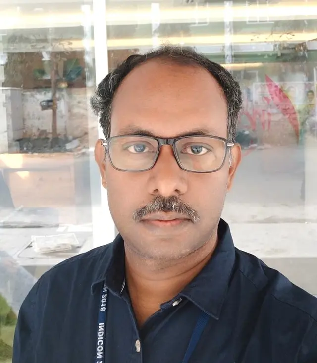
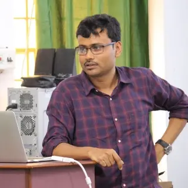
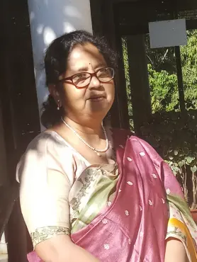
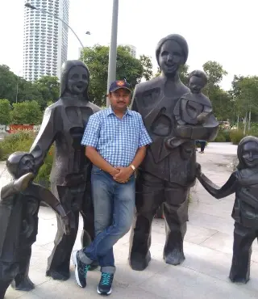
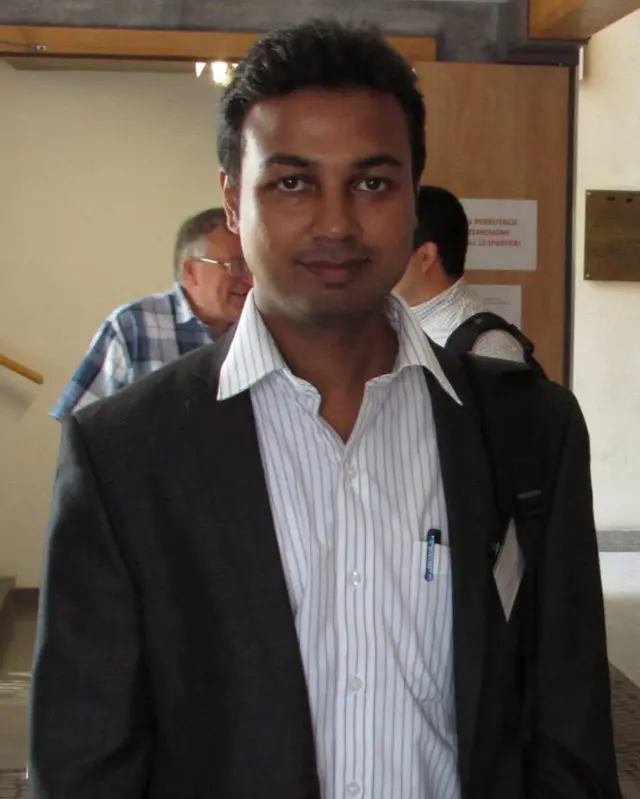

INDIAN INSTITUTE OF ENGINEERING SCIENCE AND TECHNOLOGY

Assistant Professor
Email: ashish@cs.iiests.ac.in
Qualification: M.E. in Computer Engineering
Subjects: Programming Paradigms
Research: Wireless Telecommunication and Networking, Pattern Recognition, Computer Vision and Digital Image Processing

Associate Professor
Email: apurba@cs.iiests.ac.in
Qualification: Ph.D. in Computer Engineering
Subjects: Discrete Mathematics
Research: digital geometry, discrete and combinatorial geometry, text summarization, and image processing.
Assistant Professor
Email: tamal@cs.iiests.ac.in
Qualification: Ph.D. in Computer Engineering
Subjects: Web Technology
Research:Not Available

Professor
Email: sb@cs.iiests.ac.in
Qualification: Ph.D. in Computer Engineering
Subjects: Database And Management Systems
Research: IoT, wireless sensor network, delay tolerant network, and mobile computing.

Assistant Professor
Email: nirnay@cs.iiests.ac.in
Qualification: Ph.D. in Computer Engineering
Subjects: Graph Algorithms
Research: the generation of attack graphs using AI technique, modeling network attack using the attack graphs, and finding optimal attack paths using custom security metrics.

Assistant Professor
Email: samit@cs.iiests.ac.in
Qualification: Ph.D. in Computer Engineering
Subjects: Theory Of Computation
Research: Machine Learning, Document Image processing, Computer Vision, Natural language Processing, Machine based Translation.